avar.me · стикеры
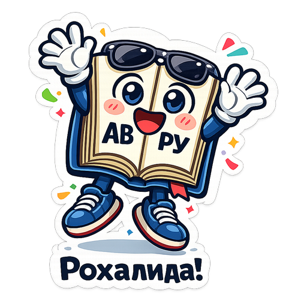
Хӏарпик — ожившая книга аварского словаря. Дружелюбный, немного ироничный и очень умный маскот (персонаж-талисман) проекта avar.me. Любит аварский язык, любит учить людей, иногда ворчит — но никогда не злится.
Добавить стикеры в Telegram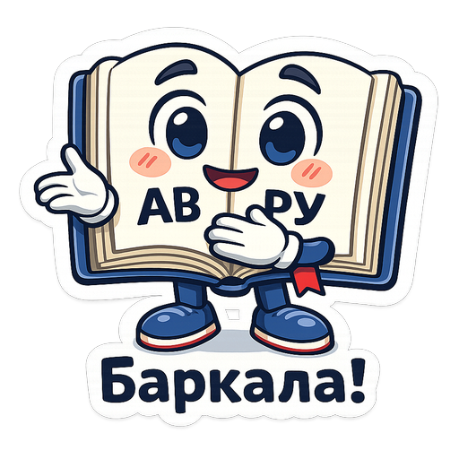
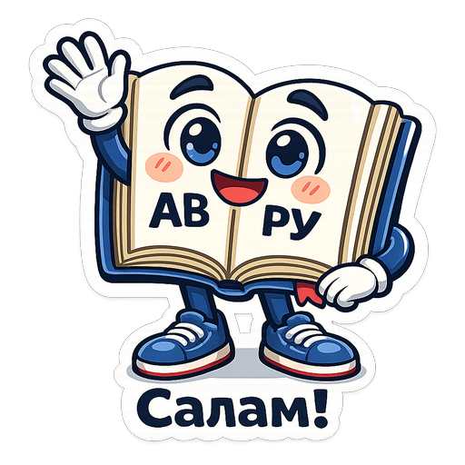
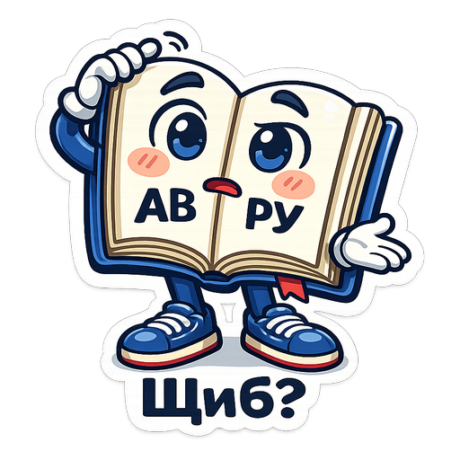
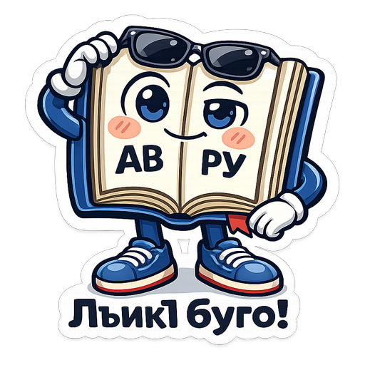
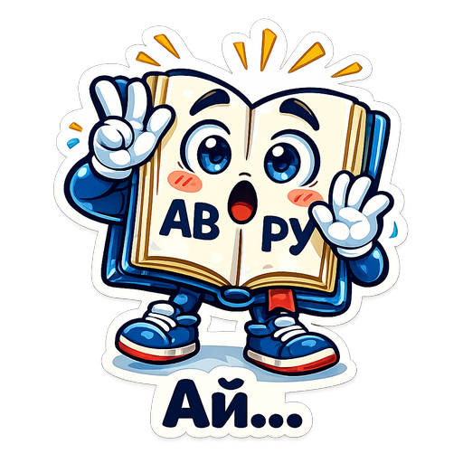
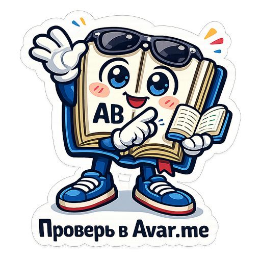
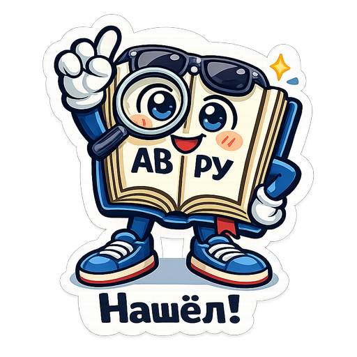
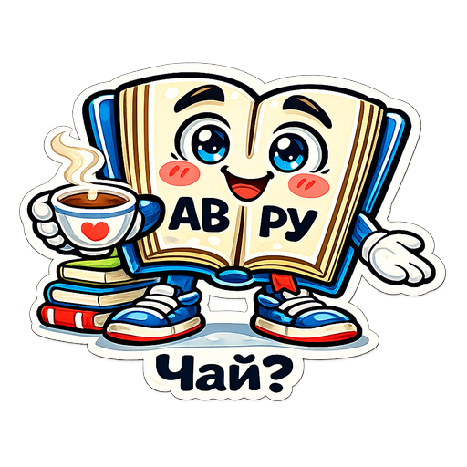
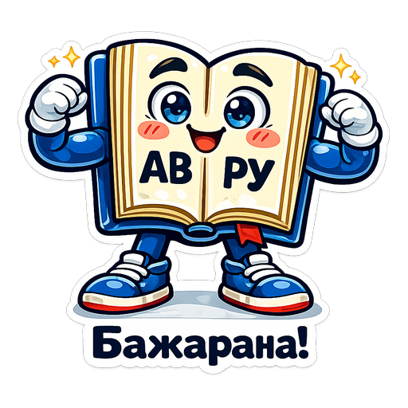
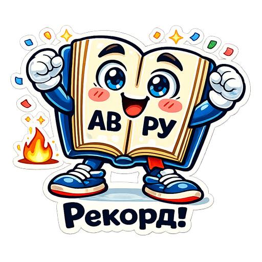
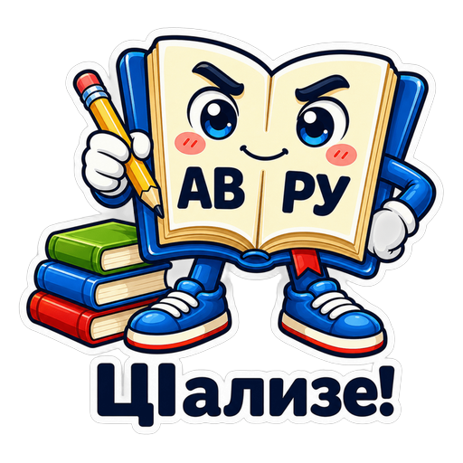
Хӏарпик — большая раскрытая книга словаря Avar.me, ожившая и очень дружелюбная. На левой странице — «АВ», на правой — «РУ»: заметно почти на любом размере, даже в маленьком стикере в чате.
Маскот придуман, чтобы через него ассоциировался аварский язык, словарь, обучение и хорошее настроение — современный подход к сохранению языка.